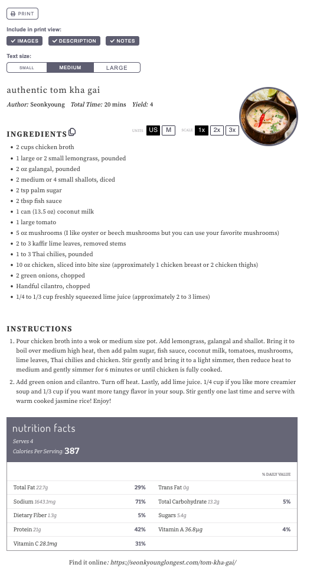

Authentic Tom Kha Gai
Author: Seonkyoung
Total Time: 20 mins
Yield: 4

Ingredients
- 2 cups chicken broth
- 1 large or 2 small lemongrass, pounded
- 2 oz galangal, pounded
- 2 medium or 4 small shallots, diced
- 2 tsp palm sugar
- 2 tbsp fish sauce (Red Boat or Three Crabs)
- 1 can (13.5 oz) coconut milk (Chaokoh)
- 1 large tomato
- 5 oz mushrooms (oyster or beech, or your favorite)
- 2 to 3 kaffir lime leaves, removed stems
- 1 to 3 Thai chilies, pounded
- 10 oz chicken, sliced into bite size (about 1 chicken breast or 2 thighs)
- 2 green onions, chopped
- Handful cilantro, chopped
- 1/4 to 1/3 cup freshly squeezed lime juice (2 to 3 limes)
Instructions
- Pour chicken broth into a wok or medium size pot. Add lemongrass, galangal and shallot. Bring it to boil over medium high heat, then add palm sugar, fish sauce, coconut milk, tomatoes, mushrooms, lime leaves, Thai chilies and chicken. Stir gently and bring it to a light simmer, then reduce heat to medium and gently simmer for 6 minutes or until chicken is fully cooked.
- Add green onion and cilantro. Turn off heat. Lastly,add lime juice. 1/4 cup if you like more creamier soup and 1/3 cup if you want more tangy flavor in your soup. Stir gently one last time and serve with warm cooked jasmine rice! Enjoy!